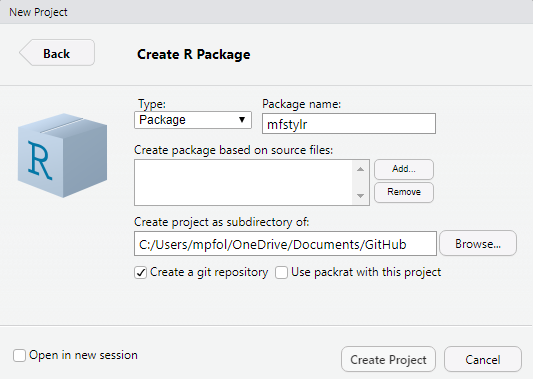

Packages
R Packages (Wickham 2015) by Hadley Wickham is a good manual on packages, but it does not include a full tutorial. The Developing R Packages Data Camp course is also helpful. I will set up my own exercise and present it here. I will create a package for my pretend organization, “MF”. The package will include the following:
R Markdown template. My template will integrate code, output, and commentary in a single R Markdown. The template will produce a familiar work product containing standard content (summary, data management, exploratory analysis, methods, results, conclusions), and a standard style (colors, typeface, size, logo).
Functions. Common I/O functions for database retrieval, writing to Excel. Common graphing functions for ggplot styling.
I am mostly copying the logic and code from the ggthemes economist.R script.
Create a package
- In the RStudio IDE, click File > New Project. Select “New Directory”. Select “R Package”. You can also use
devtools::create("mfstylr"). This will create the minimum items for an R package.

+ R directory: R scripts with function definitions.
+ man directory: documentation
+ NAMESPACE file: information about imported functions and functions made available (managed by **roxygen2**)
+ DESCRIPTION file: metadata about the packageWrite functions in R scripts in R directory. Document with tags readable by roxygen2 package.
Select XYZ > Install and Restart.
17.0.1 Document Functions with roxygen
Add roxygen documentation with #' characters. The first three lines are always the title, Description, and Details. They don’t need any tags, but you need to separate them with blank lines.
Create Data
Add an RData file to your package with use_data()
Create Vignette
Add a directory and template vignette with use_vignette(name, title).
Step 2: Create an R Markdown template
I relied on this blog at free range statistics for a lot what follows. There is also good information about R Markdown and templates in Yihui Xie’s R Markdown: The Definitive Guide (Xie, Allaire, and Grolemund 2019).
Use usethis::use_rmarkdown_template() to create an Rmd template. I will create a “Kaggle Report” template. In the Console (or a script), enter
usethis::use_rmarkdown_template(
template_name = "Kaggle Report",
template_dir = "kaggle_report",
template_description = "Template for creating Kaggle reports in RMarkdown.",
template_create_dir = FALSE
)Since my project directory is C:\Users\mpfol\OneDrive\Documents\GitHub\mfstylr, use_rmarkdown_template() creates subdirectories .\inst\rmarkdown\templates\kaggle_report\skeleton with three files
.\inst\rmarkdown\templates\kaggle_report\template.yaml.\inst\rmarkdown\templates\kaggle_report\skeleton\skeleton.Rmd
My kaggle report template will include a logo. Looks like there are two ways to embed an image in your document. One is a direct image loading reference !(), but I don’t think you can control the attributes this way. A second way is adding html tags.
References
Wickham, Hadley. 2015. R Packages. Sebastopol, California: O’Reilly Media, Inc. http://r-pkgs.had.co.nz/.
Xie, Yihui, J. J. Allaire, and Garrett Grolemund. 2019. R Markdown: The Definitive Guide. 1st ed. Boca Raton, Florida: Chapman; Hall/CRC. https://bookdown.org/yihui/rmarkdown/.